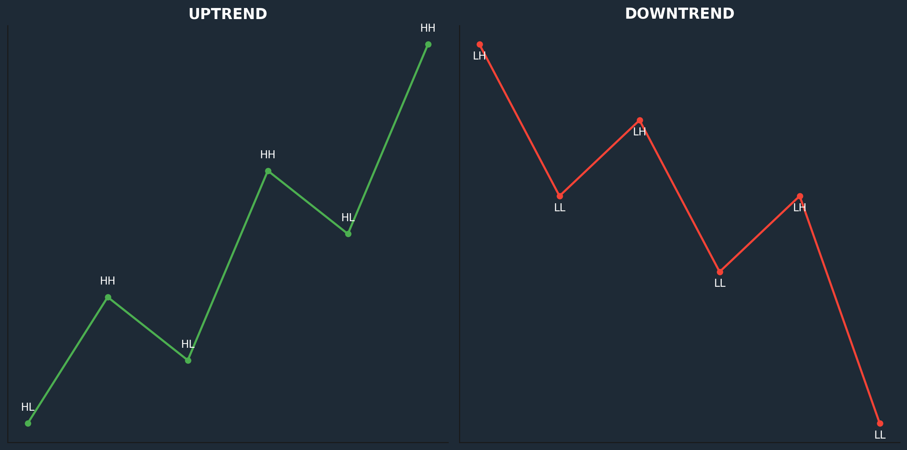

Swing treidauksen perusteet
Swing-treidaus on sijoitusstrategia, joka hyödyntää lyhyen ja keskipitkän aikavälin hintaliikkeitä markkinoilla. Tämä strategia tarjoaa mahdollisuuden saada tuottoa ilman jatkuvaa markkinoiden seuraamista, mutta menestyksekäs swing-treidaus edellyttää perusteiden hallintaa. Tässä ovat keskeiset periaatteet, jotka tarjoavat vankan pohjan sijoittamisen ja osakemarkkinoiden ymmärtämiselle:
-
Markkinoiden ymmärtämminen
Ennen kuin aloitat swing-treidauksen, on tärkeää ymmärtää, miten markkinat toimivat. hinnat liikkuvat tarjonnan ja kysynnän perusteella, ja näihin liikkeisiin vaikuttavat useat tekijät, kuten uutiset, talousindikaattorit ja yritysten tulosraportit. Perustiedot markkinoiden toiminnasta auttavat tekemään parempia päätöksiä.

Kuva: Vasemalla nouseva markkina ja oikealla laskeva markkina
-
Tekniset ja fundamentaaliset analyysit
- Tekninen analyysi: Käytetään osakekurssien historiallisia kaavioita ja teknisiä indikaattoreita, kuten liukuvia keskiarvoja ja RSI:tä, tunnistamaan trendejä ja kääntöpisteitä.
- Fundamentaalinen analyysi: Keskitytään yritysten taloudellisiin tietoihin, kuten tulokseen, liikevaihtoon ja velkoihin, jotta voidaan arvioida niiden pitkän aikavälin arvoa.
-
Trendi ja kääntöpisteet
Swing-treidaus perustuu siihen, että tunnistat hintojen nousu- ja laskutrendit sekä niiden kääntöpisteet. Trendiä seuraamalla voit ajoittaa osto- ja myyntitoimet tarkasti. Tyypillisesti swing-treidaajat ostavat alhaisesta hinnasta ja myyvät, kun hinta on saavuttanut huipun.
-
Riskinhallinta ja tavoitteet
Jokainen treidi sisältää riskejä, joten riskinhallinta on olennainen osa swing-treidausta. Tämä sisältää:
- Stop-loss toimeksiannot: Rajaa tappiot asettamalla hinta, jolla osake myydään automaattisesti.
- Oikea positioiden koko: Älä sijoita liian suurta osaa pääomasta yhteen treidiin, jotta mahdolliset tappiot eivät vaaranna koko salkkua.
Swing-treidaus ei ole pikavoittojen strategia, vaan se vaatii suunnitelmallisuutta ja kärsivällisyyttä. Aseta realistiset tavoitteet ja odotukset, ja pysy suunnitelmassasi.
-
Jatkuva oppiminen
Osakemarkkinat muuttuvat jatkuvasti, ja menestyminen edellyttää oppimista. Päivitä osaamistasi seuraamalla markkinoita, osallistumalla kursseille ja opiskelemalla lisää sijoittamisesta.